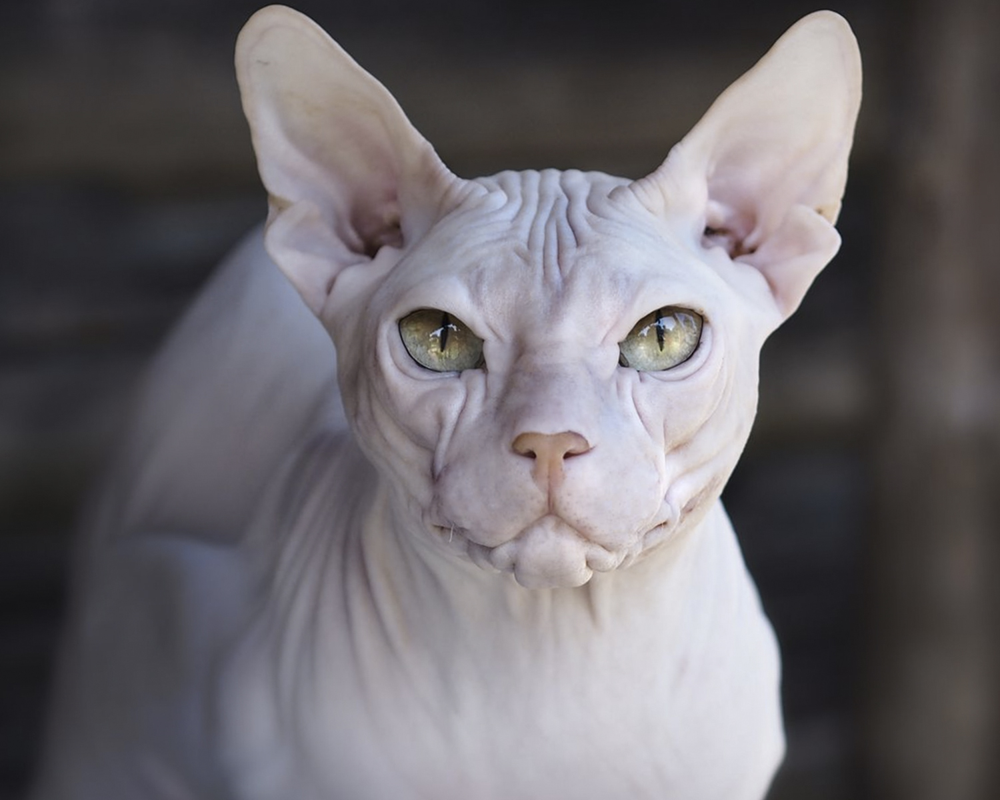

Походження
Випадки мутацій, у яких народжувалися кішки з відсутністю вовни, відомі з давніх часів. Незвичайні вихованці жили серед людей у період розквіту цивілізації ацтеків і мешкали у храмах. Люди вірили, що ці тварини допомагають їм отримати благословення богів. Цілком можливо, що саме ці вихованці започаткували нову породу, яку називали мексиканською (часто – ацтекською) безшерстною кішкою.
Порода мала відмінність від сучасних сфінксів: наприклад, до зими на спині та хвості у них відростала довга шерсть, яка повністю зникала до літнього періоду. На жаль, порода мексиканської безшерстної кішки повністю зникла на початку ХХ століття. Її походження так і залишилося таємницею.
За виведення «лисих» порід люди взялися трохи більше ніж 40 років тому. У 70-х роках з'явилися канадські сфінкси, у 80-х – дві породи, виведені в Росії: донські сфінкси та петерболди.
Особистість
У сфінксів надзвичайно незвичайний характер. Їхня дивна відданість господарю викликає асоціації скоріше з собакою, ніж з кішкою, яка «гуляє сама по собі».
Кішки породи сфінкс не переносять самотності, їм дуже важливо перебувати поряд із господарем. Представники породи самі обирають собі людину з членів сім'ї, яка буде для них особливою на все життя. З ним кішка проводитиме більшу частину часу, спатиме під однією ковдрою і супроводжуватиме у всіх справах по будинку. Але і з іншими членами сім'ї вихованець буде дружнім. З іншими тваринами в будинку ці кішки легко знаходять спільну мову.
Кішки породи сфінкс - одні з найбільш велелюбних істот на планеті. Вони дуже люблять людей, неймовірно товариські, і вміють уловлювати найменші зміни у настрої господаря. У цьому роль залежного домашнього вихованця задля них. Сфінкси відчувають себе повноправними членами сім'ї та не терплять зневаги.
Здоров'я
Зовнішній вигляд сфінксів оманливий. Відсутність вовни створює враження крихкості. Звідси думка, що голі кішки мають слабке здоров'я.
Здоров'я у сфінксів дуже міцне, також вони мають відмінний імунітет. Їм не страшні протяги та короткочасне охолодження. Але це зовсім не означає, що їх можна утримувати у холодному приміщенні. Також варто знати, що шкіра цих вихованців дуже чутлива до прямого сонячного проміння і легко отримує сонячні опіки.
У нормі температура тіла сфінксу – 38-39 градусів. Через це вони часто здаються занадто гарячими.
Як кішка будь-якої іншої породи, сфінкс може підхопити вірусну інфекцію. Дотримуючись нескладних правил утримання – регулярна гігієна, своєчасне щеплення – ви зведете до мінімуму ризик захворювання вашого вихованця.
Єдине слабке місце у сфінксів – очі. Відсутність вій робить їх менш захищеними, тому вони вимагають більш ретельного догляду. Світлі нерясні виділення з очей є нормою. І можна акуратно видаляти змоченим у розчині ромашки ватним тампоном або купити спеціальний засіб у ветеринарній аптеці.
Грумінг
У змісті сфінкси невибагливі. Однак особливості кішок породи сфінкс вимагають себе певної уваги.
Незважаючи на те, що сфінкси не мають теплого підшерстя та вовни, їм не потрібні тепличні умови. Кімнатна температура до +25 для них цілком комфортна. Але спати вони воліють під ковдрою і обов'язково поруч із господарем чи іншими членами сім'ї.
У періоди, коли на вулиці вже холодно, а опалення ще не ввімкнене, сфінкси не відмовляться від одягу. Не обов'язково купувати дорогі костюми. Домашній светр вихованцю можна зробити самостійно. Для цього підійде звичайна тепла шкарпетка великого розміру з вирізаними отворами для лап. Зазвичай сфінкси не відчувають жодних незручностей в одязі та не зривають його з себе. Їм дуже приємна турбота і подобається бути в теплі.
Відсутність шерсті зовсім не означає, що шкіра сфінксів не потребує догляду. Замість вовни шкірний покрив захищає особливе мастило, яке має консистенцію рідкого воску, коричневий колір та специфічний запах. Цей запах сфінксам цілком подобається, і вони не поспішають його позбутися шляхом регулярних умивань. Тому господареві слід купати свого вихованця раз на тиждень спеціальним шампунем для лисих кішок.